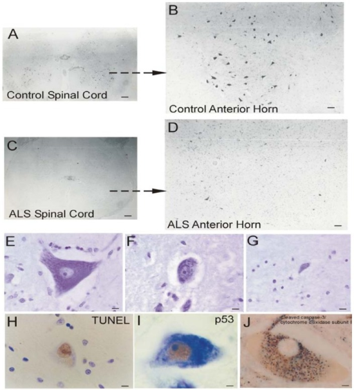

Página 6 · Achado típico / pegadinha
Clínica manda · não é GBS · DFT
Sensibilidade alterada no “quadro de ELA” — e agora? Sensitivo é o freio; GBS é a fronteira; DFT é o atalho de prova.
Clínica manda; exclusão fecha
Como doença degenerativa, a clínica tem muito peso no diagnóstico. Existem critérios clínicos para preencher o diagnóstico — mas saber a lista na ponta da língua é bobagem no sentido de decorar checklist: o essencial é a clínica + afastar outras causas.
Diagnóstico de boa doença neurodegenerativa: critérios existem, fluxo prático = clínica + exclusão de mímicos. No caso de Jairo, liquor e imagem de crânio/coluna normais empurram para fora o mímico estrutural óbvio — sem substituir a leitura do exame misto.
Sensitivo preservado
A sensibilidade é preservada na ELA. Se houver alteração sensitiva, pensar em outro motivo (não ELA típica).
ELA ≠ Guillain-Barré (corpo × axônio)
Não é como Guillain-Barré. Guillain-Barré de base é uma polineuropatia (com preferência pelo motor, mas no nervo). Em GBS, o nervo motor corresponde ao segundo neurônio no sentido de via — mas o sítio é o nervo / axônio, não o corpo celular.
Na ELA, o problema do 2º está no corpo do segundo neurônio (que começa a morrer) — não no axônio, não é nervo periférico como neuropatia clássica. O primeiro neurônio também começa a morrer na ELA.
Não se classifica ELA como neuropatia periférica — é doença dos neurônios motores (corpo do 2º + 1º).
Fronteira: GBS come o nervo/axônio; ELA mata o corpo do neurônio — e o primeiro também.
Demência que anda com a ELA
Existe associação da ELA com demência frontotemporal (DFT). A patogênese da esclerose lateral amiotrófica é muito semelhante à da demência frontotemporal. Se a prova perguntar qual demência se associa à ELA → frontotemporal.
ELA × Guillain-Barré
ELA ↔ DFT
Patogênese muito semelhante. Se a prova perguntar qual demência se associa à ELA → frontotemporal.

By Lee J. Martin, from “Mitochondrial and Cell Death Mechanisms in Neurodegenerative Diseases”, Pharmaceuticals (Basel) 2010, via Wikimedia Commons / PMC3023298 Fig. 5 · CC BY 3.0 · fonte

Por que “corpo”, não “axônio”
A histologia mostra o corno anterior esvaziado de neurônios grandes — o corpo do 2º morrendo. É o contraste que separa ELA de GBS: aqui a lesão é no corpo do motoneurônio (e o 1º também cai), não na bainha ou no axônio do nervo periférico.
Neurônio motor: corpo destacado (ELA) vs nervo/axônio destacado (GBS) — seta “não é neuropatia periférica”.
Quiz — fixação
-
Alteração sensitiva clara em quadro “parecido com ELA” deve:
Gabarito B. Sensitivo preservado é regra da ELA típica; sensitivo alterado abre diferencial.
(A) quebra a regra. (C) GBS é uma hipótese, não automática. (D) joga fora discriminador. Cai em A porque “fraqueza progressiva” engole o sensitivo.
-
A fronteira topográfica ELA × Guillain-Barré é:
Gabarito B. Sítio do 2º (corpo vs axônio) + presença do 1º na ELA.
(A) classifica ELA errado. (C)/(D) apagam a topografia. Cai em A porque “motor” vira sinônimo de “nervo”.
-
Demência associada à ELA na prova:
Gabarito B. DFT = resposta cobrada; patogenia semelhante.
(A)/(C) outras demências. (D) nega a associação. Cai em A porque é a demência “default” da banca leiga.